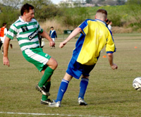
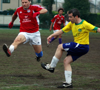
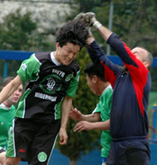
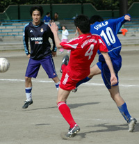

OLD STORIES - April 2006
Woodwork Helps France to FJ Final
Hachioji Park, Sun 30th April. After scoring at both ends and hitting the post/bar 4 times in normal time, Sala hit the woodwork with their first penalty in a shootout that resulted in France FC going to the Final of the FJ Cup, facing Swiss kickers at Saitama Stadium (sub ground) on June 10th. more ...
FJ.
YCAC Back to Winning Ways.
Big Circus, Sat 22nd April. YCAC got back to winning ways with a comfortable 4-1 victory over the French at Big Circus on Saturday night. Six thirty KO on a saturday seems like a plan particularly when it sometimes appears that 1/2 your team doesn't own an alarm clock but in reality it just gives team management a whole days headache putting together a team instead of the usual hour or so panic before KO more ...
ST.
Swiss Looking to Make it 3 in a Row
Hachioji Park, Sat 15th April. Swiss Kickers beat YC&AC 1-0 agian, the 2nd time in a week to go through to their third straight Footy Japan Cup final. Having beaten them in the league, finishing YCAC's hopes of catching Hibs for the title, Swiss repeated the scoreline to knock them out of the cup. more ...
FJ.
Clash Hold Celts Leaving Jets on Top.
|  |
|
Final game for Eugene Beattie. |
Misato, Sun 9th April. The Celts Div 2 title challenge came to a disappointing end at windy Misato, when they were held to a 1-1 draw by the Clash.
Despite missing 6 regular first team players the Celts started well, passing the ball around nicely, with chances being created for Oli and Neil up front. The back four were pretty solid, the only difficulty being the strong wind making it hard to judge how far the ball was going to carry. more ...
Celts had their final team talk from Eugene "jinky" Beattie on his farewell appearance for the Celts. We'll miss those teamtalks!! Thanks for the years of service and best of luck for the future Eugene.
RH.
Geckoes Come Back to Bag the Points
 |
|
Andy Drought slides home the winner for Geckoes. |
Misato, Sun 9th April. What is it about WSG that they have to go a goal down before they snap into action? A sweetly struck half volley in the 5th minute from Jetro's Nakase woke the Geckoes sharply from their slumbers. more ...
GS.
Swiss Hand Hibs Title with Win over YCAC.
YC&AC, Sat 8th April. Nice day for a game, unfortunately it was at YCAC which is getting bumpier by the day but I guess we have to be grateful for any pitch we can get.
About the match, it really wasn’t much of one to tell the truth. There was a lot of huffing and screaming at the referee from both sides and very little skill on display as a result of the poor conditions. more ...
Cap'n Kirk.
See all the photos from the Charity 6's in 2 large galleries, CLICK HERE
|  |
|
BEFC striker Silvinho puts the pressure on. |
British Embassy End Shane Promotion Hopes.
YC&AC, Sun 2nd April. British Embassy eased to a 2-0 victory over promotion chasing Shane FC at YCAC on a rain swept Sunday to extend their unbeaten record to 4 games.
A foul 20 yards out from goal allowed Reds midfielder Masa to curl-in a gem of a free kick over the Shane wall and into the bottom right corner of the goal after 25 minutes.
The lacklustre Shane were further punished when Embassy midfielder Satoshi pounced on an error by the Shane keeper after he spilled a shot from Kotaro on 70 minutes to effectively finish this game off as a contest. more ...
Blip Pilot.
|  |
|
Goal scorer Katase braves the fists of Taylor. |
Knights No Pushover.
YC&AC, Sun 2nd April. We had done the sums and worked out that if the Hibs won this game and the YCAC drew or lost against the Swiss or France FC; the 3rd TML championship would be heading from Swiss’ HQ at Bernd’s bar, back with the Hibs to Paddy Foley’s.
For this fixture against the Shogun Knights at the YCAC the wind was blowing strongly (as usual) and the pitch seems to getting bumpier each week. At Tokyo Hibernian we wholeheartedly endorse the Swiss’ plea for the new Astro pitch at the YCAC to be built to full size; (I reckon most of us clumsy bruisers in the TML will have no problem running 10 yards in stead of 5 to challenge an opposition player blessed with more than his fair share of skill – the extra exercise will do us the world of good!). more ...
BC.
Jets Scrape Draw, Win Promotion.
 |
|
Clash goal scorers Sam & Michael linking up. |
YC&AC, Sun 2nd April. The Saitama Jets finally won promotion to Division 1 in their third TML season, after playing out a tight 3-3 draw with the Wall Street Clash. The team from Saitama were not at their best against a tough Clash side, but showed their determination by getting back into the game after being behind three times. Both teams had chances to win it at the end, but veteran strikers on both sides lacked the composure to grab a late winner.
The Jets form has been somewhat sporadic in recent weeks, and the fluid attacking play of earlier in the season has been missing. However poorly the team has played, with Gildart and Loren around, goals are always likely. So, lining up for the first time this season with neither of our main goalscorers was a concern. Playing with the wind in the first half, the Jets tended to overhit balls through to Mike Passmore and Mark Eite, and despite having a lot of the ball, we were struggling to create clear chances. The Clash were tidy in midfield, and generally making a better job of playing into the wind than the Jets were of playing with the supposed advantage.more ...
GG.
Sala Edge Hungry Geckoes.
 |
|
Lenny gets a helping hand while Shige looks on. |
OiFuto, Sat 1st April. Controversy, controversy, controversy. While there was little of that in a terse encounter at Oifuto last Saturday, Sala and in particular TML linchpin Sid Lloyd (Age withheld) have been the subject of many a nasty rumour recently, founded no doubt over a jar or eighteen of premium strength imported lager in one or other of Tokyo’s more puritan nightspots.
Rumours relating to Sala’s ability to beat some teams and inability to beat certain others, have led to a Sid Lloyd/Sala/Hibs conspiracy theory that has recently only been rivalled by the Turkish newspaper which claimed that America caused the South-East Asian earthquake and subsequent tsunami by means of an underwater nuclear test gone wrong.
Sala are deeply hurt by such rumours and will certainly be bringing them to the fore during next week’s annual Sid Lloyd/Sala/Hibs League Rigging Conference to be held at Sala Bar (Dress: Smart/casual, 2000 yen entry, one free drink, riff-raff unwelcome)
more ...
RC.
|  |
|
KGFC striker Suwa fires in a shot past Swiss' Kai. |
Space to Play.
OiFuto, Sat 1st April. Today was a testament to true football grounds. Instead of playing on the kids size cabbage patch at YCAC or St. Mary’s, where a football game is less likely to be seen than a life-size pinball game, the spacious ground at Oifuto (even the dirt) was a delightful change for the best. The ability to find players in space, to put the ball on the ground and run with it, to connect 4-5 passes without a bobble or even a knee high bounce, what a joy!
Oh, do I hope the designers of YCAC’s new ground see the light (or anything resembling the real dimensions of a footy pitch) and decide to make it regulation size. Will the TML be forced to play on a kiddie ground all next year... more ...
Kirk.